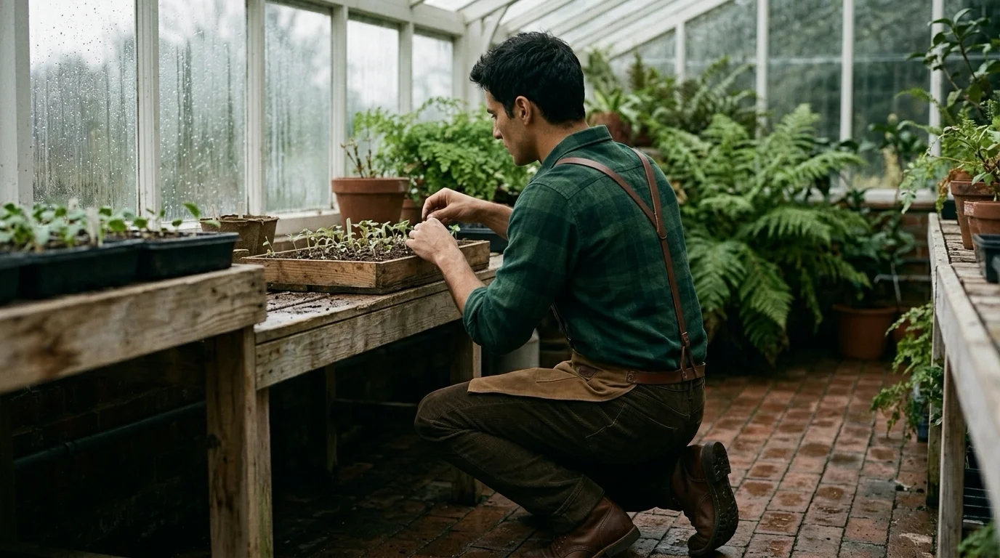
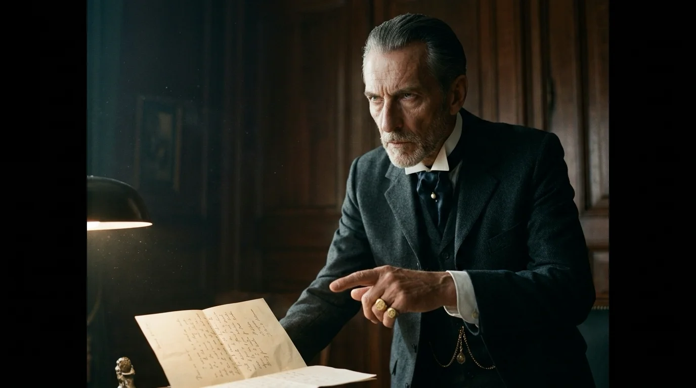
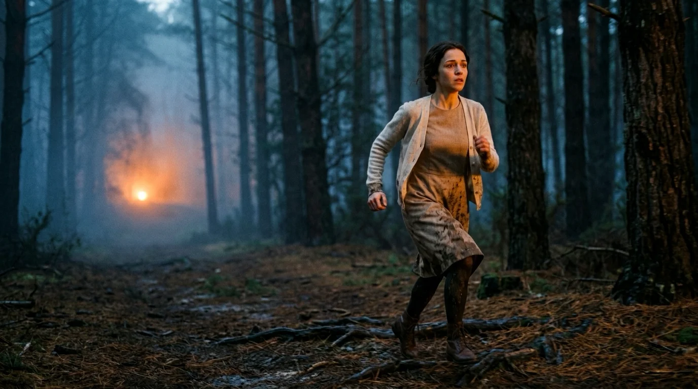
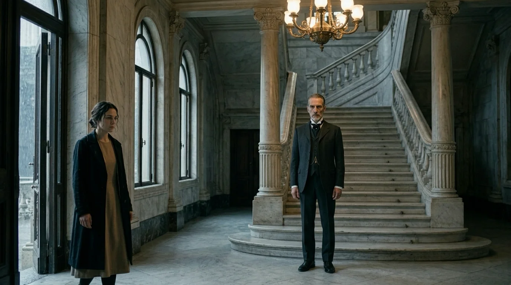
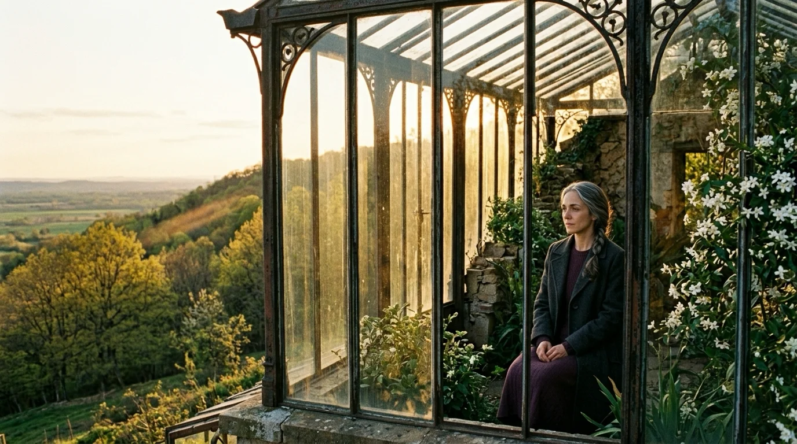

El repiqueteo del agua contra los cristales del invernadero sonaba como una cascada lejana. Isabel empujó la cancela de hierro con la yema de los dedos para evitar que las bisagras chirriaran. Dentro, el aire olía a arcilla húmeda, a hojas de camelia recién pulverizadas y a turba fermentada.
Mateo estaba de espaldas, arrodillado junto al estante de los semilleros. Llevaba la camisa de franela verde arremangada y un delantal de cuero atado a la cintura. Sus dedos acomodaban con paciencia de orfebre los esquejes de jazmín en pequeños tiestos de barro. No se volvió de inmediato, pero su respiración cambió de compás.
—Si sigues cruzando el jardín bajo este aguacero, notarán las marcas de tus botines en la grava —dijo él, sin levantar la vista. Su voz era pausada, templada por los inviernos a la intemperie.
—Que miren lo que quieran —respondió Isabel, echando el pestillo—. Mi padre lleva dos horas con los abogados en la biblioteca. Están redactando las cláusulas de mi boda como si tasaran una partida de ganado. Federico pone el banco; los Alcázar, el apellido y las tierras del sur.
Mateo dejó la paleta sobre la tabla de madera y se incorporó despacio. Se sacudió los restos de tierra antes de mirarla. En sus ojos oscuros había cansancio, pero también una quietud que a Isabel le devolvía el aire cada vez que la casona amenazaba con ahogarla.
—No eres una mercancía, Isabel.
Caminaron hacia el fondo del invernadero, donde las hiedras tapaban la luz exterior. Bajo el banco de piedra donde solían refugiarse de las tormentas, Mateo levantó una losa floja entre las raíces de un ficus y extrajo una caja de latón atada con cáñamo.
—Aquí guardo lo único que me importa de este lugar —dijo, abriendo la tapa—. Cartas. Las escribo por las noches en el pueblo, cuando mi madre duerme tras tomar la medicina. Escribo todo lo que no puedo decirte cuando paseas por los setos del brazo de los tuyos.
Isabel miró el fajo de papeles doblados en cuatro, cubiertos de caligrafía apretada a lápiz. Leyó la primera línea: *Hoy podé los rosales pensando en cómo sujetas la taza de porcelana sin tocar la plata.*
—No te pido que vivas en una choza —añadió él con una serenidad que le quebró el pecho a ella—. Pero si un día esa jaula te pesa demasiado, tengo ahorradas cuarenta mil pesetas y un trabajo en los viveros del puerto de Bilbao. Una casa con tejado de pizarra y una higuera en el patio. Nada más. Y nada menos.
Isabel apoyó la frente contra el pecho de franela de Mateo y escuchó el latido firme de su corazón.

La tormenta amainó al atardecer. Isabel cruzaba la galería de los retratos hacia su alcoba cuando la puerta del despacho de su padre se abrió de golpe.
—Entra, Isabel —ordenó la voz seca de don Álvaro.
La estancia olía a tabaco de pipa holandés y a cuero curtido. Don Álvaro de Alcázar permanecía tras la mesa de caoba con las manos a la espalda y el traje de tres piezas abrochado hasta el cuello. Sobre el secante de terciopelo verde descansaba una cuartilla de estraza doblada.
—El mozo de cuadras encontró esto en el cobertizo —dijo su padre sin alterar el tono—. Se le cayó al jardinero mientras recogía los arreos.
Isabel sintió que el suelo se inclinaba bajo sus pies.
—Padre, es un asunto privado.
—En esta casa nada es privado si mancha el apellido —replicó don Álvaro—. Un peón miserable que vive de jornales. ¿Crees que no sé lo que busca ese advenedizo? Pretende asegurarse el porvenir a costa de nuestro patrimonio.
—Mateo no quiere tu dinero —soltó Isabel, con un temblor de rabia en la voz—. Nos conocemos desde niños.
—Por eso debí despedirlo hace diez años —sentenció el padre—. Le puse sobre esta mesa un fajo de quinientas mil pesetas para que subiera al tren de las nueve hacia el sur y no volviera a pisar la provincia.
Isabel lo miró, aterrada.

—¿Y qué hizo?
Don Álvaro apretó la mandíbula; por un instante, su máscara aristocrática dejó escapar un rencor herido.
—Arrojó el sobre a la chimenea. Dijo que mi dinero no compraba lo que él no tenía en venta.
—Porque es mil veces más digno que tú —respondió ella.
La bofetada resonó en el despacho como un latigazo. La fuerza del golpe arrojó a Isabel contra el respaldo del sillón, con un regusto metálico de sangre en el labio.
—La boda con Federico se celebrará el quince del mes próximo —dijo don Álvaro, ajustándose los puños sin mirarla—. Tu pasaporte queda en la caja fuerte. No saldrás al jardín sin una doncella. Y en cuanto a ese peón… si vuelve a acercarse a estas tierras, la guardia civil lo meterá en una celda hasta que se le pudran los huesos.
Durante tres días, el encierro convirtió la casa señorial en una prisión sin ruido. Isabel permaneció custodiada en el ala norte por doña Eulalia, la gobernanta más leal de su padre. La comida llegaba fría en bandejas de plata y las ventanas enrejadas solo mostraban cipreses agitados por el viento.
El jueves por la noche, fue Carmen, la criada más joven —cuyo hermano trabajaba en la estación y apreciaba a Mateo—, quien deslizó una nota bajo el platillo de la taza de infusión. La letra a lápiz decía:
*Viernes, cuatro y media de la madrugada. El mercancías para Bilbao hace escala en el empalme viejo. Estaré esperándote con el coche en la cancela trasera del huerto de manzanos. Trae solo lo puesto. Si a las cinco no estás, sabré que te retienen y entraré por la puerta principal.*
Isabel quemó el papel en la palmatoria y guardó en el bolsillo del abrigo un pañuelo de hilo y la pequeña llave de latón que Mateo le había confiado para abrir la caja bajo el ficus.

A las cuatro de la madrugada, cuando el vendaval hacía crujir las vigas del tejado y los perros dormían resguardados en las cuadras, Isabel forzó el cerrojo del balcón que daba a la terraza baja. Se descolgó por la espaldera de hierro de las glicinas, sintiendo las ramas arañarle las muñecas y la escarcha calarle los dedos.
Tocó la hierba empapada sin hacer ruido. Corrió entre los setos de boj hasta la cancela del huerto. El candado colgaba reventado con una cizalla, pero al otro lado del camino no había ningún automóvil. Solo dos surcos hondos de neumáticos en el barro fresco y olor a gasolina quemada flotando en la niebla.
A lo lejos, en la carretera comarcal, resonó el chirrido agónico de unos frenos sobre la gravilla, seguido de un estampido metálico y seco que apagó la noche entera.
Isabel no sintió el barro que le calaba las medias hasta las rodillas. Corrió hacia el resplandor anaranjado que titilaba entre los pinos del barranco.
Al alcanzar la curva del puente, el viejo utilitario blanco de Mateo yacía volcado contra el guardarraíl de hormigón, con el capó aplastado. A cincuenta metros, dos berlinas negras de gran cilindrada permanecían detenidas con los motores en marcha. Al verla emerger del matorral, uno de los conductores apagó los faros; los dos coches maniobraron con un rugido sordo y desaparecieron en dirección a la finca familiar.
—¡Mateo! —gritó Isabel, desgarrándose la garganta.
Llegó a los restos del vehículo. El parabrisas había estallado en esquirlas diminutas. Atrapado entre el volante doblado y la chapa, Mateo respiraba con estertores roncos. Tenía la frente abierta por el impacto, pero sus ojos oscuros buscaron los de ella al oír su voz.
—Isabel… —apenas logró articular entre el vaho frío.
—Estoy aquí. No te muevas, por favor, no te muevas —sollozaba ella, intentando forzar la portezuela retorcida con dedos sangrantes—. Voy a pedir socorro a la gasolinera…
—No te vayas —Mateo rozó con dos dedos manchados de hollín la mano de ella—. No hay tiempo.

Un camión lechero que bajaba del valle frenó en el arcén. Dos operarios bajaron corriendo, forzaron la chapa con una palanca y lograron tender a Mateo sobre una manta en el asfalto. La sangre manaba por debajo de su cazadora de pana. Isabel se arrodilló sobre la grava helada, acomodando la cabeza de él sobre su regazo.
—Me embistieron… en la recta —susurró Mateo, tosiendo con esfuerzo—. Cerraron el paso por delante y por detrás.
—Lo sé. Te juro que nos iremos, Mateo. Renuncio a todo. No quiero sus tierras, no quiero nada.
Mateo intentó esbozar una sonrisa que el dolor convirtió en una mueca quebrada. Con el último aliento que le quedaba, levantó la mano temblorosa y cerró los dedos de ella sobre la llave de latón.
—Nunca quise que renunciaras por mí —dijo él con una ternura que borró por un instante el horror del asfalto—. Solo quería que supieras que podías ser libre. Que el mundo es más ancho que sus salones.
—Mateo, mírame…
—Léelas cuando florezcan los jazmines. No me olvides en el invernadero.
El pulso bajo los dedos de Isabel titubeó dos veces, como un latido ahogado, antes de detenerse del todo. La cabeza de Mateo cayó inerte sobre la manta. Sus ojos quedaron fijos en la niebla que clareaba hacia el este con la primera luz del alba.
Isabel no gritó. Se inclinó sobre su rostro tibio, le besó los labios manchados de tierra y permaneció abrazada a su cuerpo inmóvil hasta que el aullido lejano de las ambulancias tiñó de azul los troncos mojados de los pinos.
El entierro de Mateo congregó a los jornaleros del pueblo en el cementerio parroquial. Isabel asistió sola, a pie, vestida con un abrigo negro liso y la cabeza descubierta bajo la llovizna. Cruzó entre los vecinos, depositó una rama fresca de jazmín sobre la tierra removida y se marchó antes del responso final, ignorando a los dos chóferes que su padre había apostado en la cancela para vigilar sus pasos.

Al regresar a la finca señorial, encontró a don Álvaro esperándola en el vestíbulo principal. Su padre intentó tomarle el antebrazo con fingida condescendencia.
—Ha sido una desgracia lamentable, Isabel. La fatalidad de las curvas de montaña. Pero la sensatez debe imponerse. La familia Montero ha tenido la delicadeza de no dar crédito a las habladurías y…
Isabel retiró el brazo con lentitud y lo miró con una fijeza tan helada que el hombre enmudeció. Se quitó la sortija de zafiro del compromiso, la sostuvo en alto un instante y la arrojó a la pila de piedra de la fuente ornamental, donde se hundió entre las hojas podridas del fondo.
—Si vuelves a dar un paso hacia mí —dijo en un susurro nítido—, declararé ante el juez instructor y ante la prensa quién pagó la gasolina de las dos berlinas que embistieron a Mateo en el puente.
El rostro de don Álvaro palideció, envejeciendo diez años en un solo segundo. Isabel le dio la espalda y caminó hacia los jardines sin volverse a mirar.
Entró en el invernadero de cristal. El olor a tierra húmeda y a hojas de camelia la envolvió como un cobijo sagrado. Se arrodilló frente al banco de piedra, retiró la losa suelta entre las raíces del ficus y abrió la caja de latón con la llave que llevaba colgada del cuello.
Dentro aguardaban decenas de cartas nuevas, atadas con bramante vegetal y fechadas semana a semana. Mateo había dibujado en ellas los planos a lápiz de una casa de madera frente a la costa, la huerta que plantarían juntos, los injertos que probarían en los frutales y los nombres sencillos que soñaba para sus hijos. En la última página, fechada la tarde anterior a la fuga, una frase escrita con trazo limpio cerraba el cuaderno:
*No le temas a la soledad, Isabel. La tierra siempre espera a quien sabe cuidarla con amor verdadero.*
Treinta años después, los diarios de la región recogieron la inauguración del Parque Botánico Mateo Durán, levantado sobre los terrenos donados por doña Isabel de Alcázar tras el fallecimiento de sus padres y la venta del patrimonio familiar. Las antiguas caballerizas y pabellones de recreo se habían transformado en una cooperativa agrícola y en viviendas accesibles para las familias humildes de la comarca.
Isabel, con cincuenta y tres años y el cabello plateado trenzado con sobria elegancia, declinó presidir la ceremonia oficial. Mientras la comitiva celebraba los discursos en la plaza del pueblo, ella caminó sola hacia el viejo invernadero de cristal que había hecho restaurar pieza a pieza en el corazón del jardín.
La luz templada de la primavera llenaba la cúpula acristalada. Las camelias estaban abiertas y el aroma del jazmín flotaba espeso en el aire de la tarde. Isabel tomó asiento en el banco de piedra, extrajo del bolsillo una de las cuartillas amarilleadas por el tiempo y la desdobló con cuidado infinito.
Acarició los trazos de grafito que la mano de Mateo había dejado sobre el papel de estraza antes de que la violencia truncara su camino. Conocía cada palabra de memoria, pero al leerla en voz baja en la quietud vegetal, la presencia de él volvía a habitar el espacio, limpia de rencor y de muerte.
Había conquistado la libertad que tanto ansiaba su juventud; y aunque el precio hubiera sido el vacío inextinguible de sus brazos, en el aire del invernadero el amor seguía brotando, terco y fértil, contra toda la ruina del mundo.